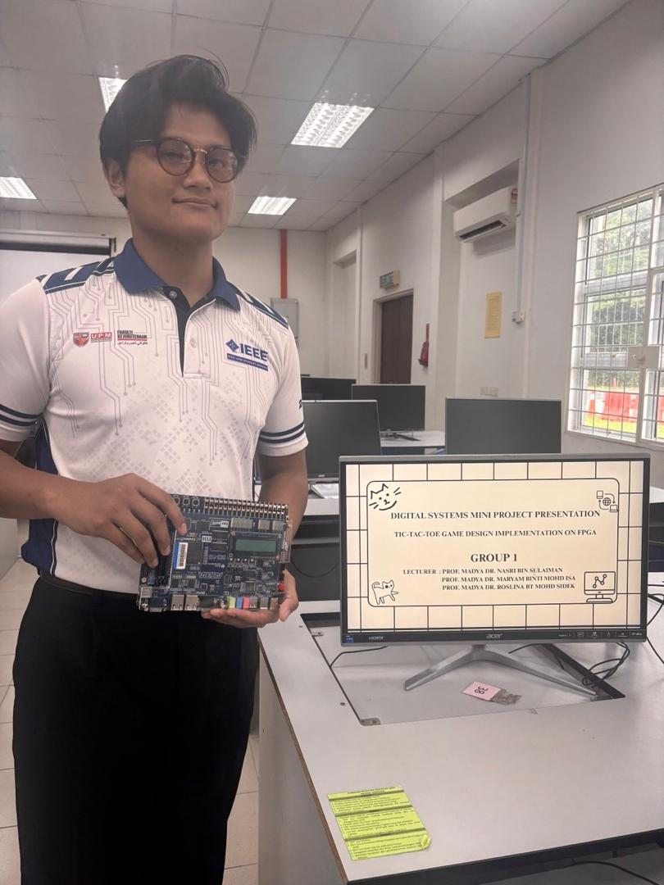
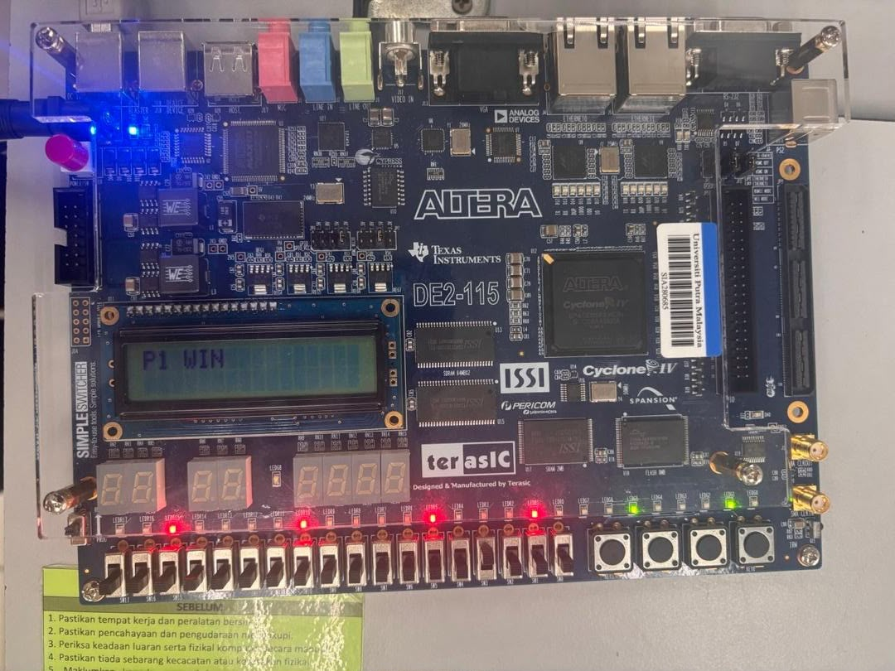
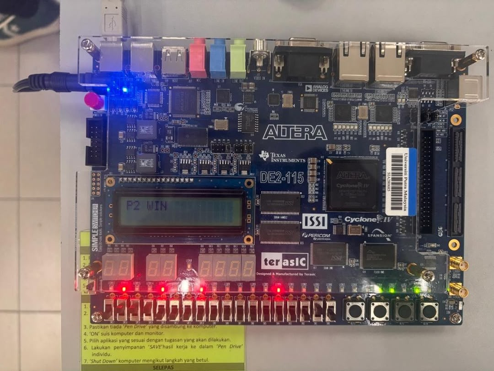
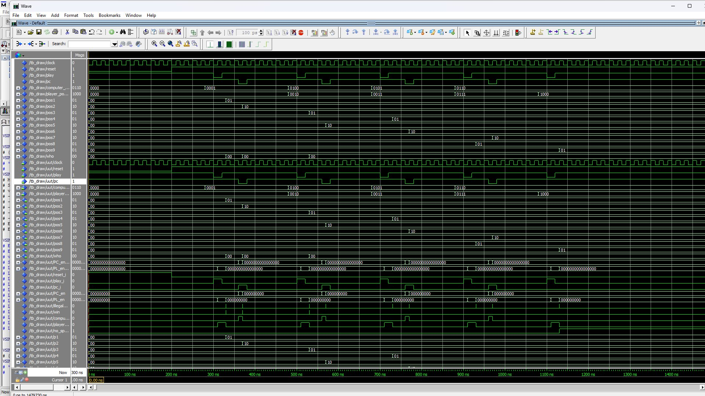
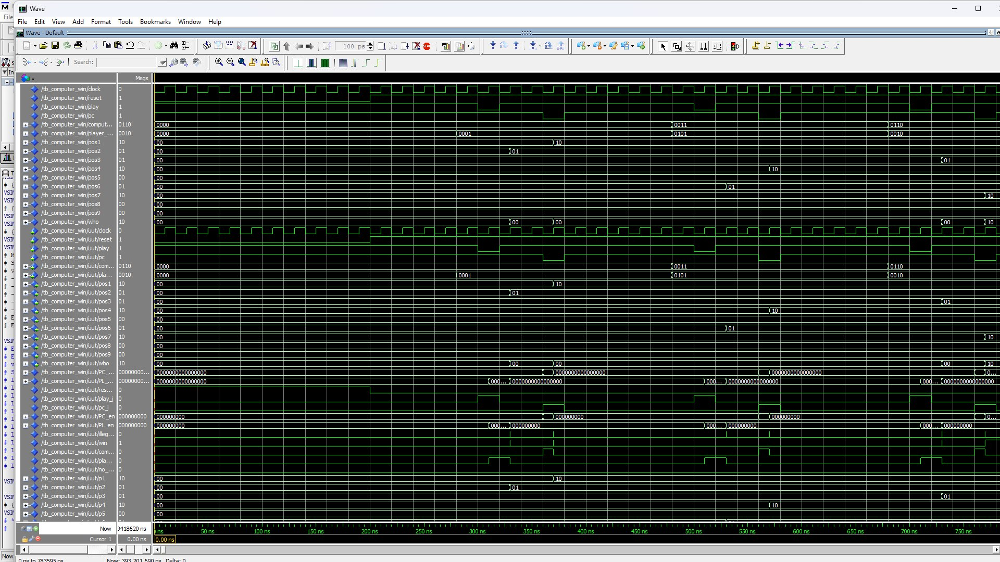
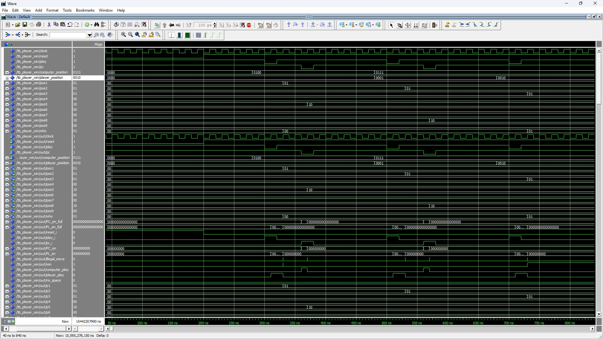

Tic-Tac-Toe Logic Engine on Intel DE2-115 FPGA
A fully custom, modular digital logic architecture synthesized on the Intel DE2-115 FPGA board. Features an 8-state FSM controller, real-time illegal move detection matrix, dual position decoders, position registers (pos1–pos9), combinational win-check evaluators, 16x2 character LCD driver, and automated computer opponent play logic.
fsm_controller:fsm1. Live Hardware Board Verification (DE2-115 Bench Results)
Physical hardware execution on the Altera/Intel Cyclone IV DE2-115 development board verifying real-time game status output driven to the onboard 16x2 character LCD and active LED matrix.

Player 1 Victory State (P1 WIN)
Live Hardware
Winner detector module asserts winner = '1' and identity who = 2'b01. The onboard 16x2 LCD display drives the character string "P1 WIN" while active Red LEDs indicate X coordinates occupied on the 3x3 grid.

Player 2 / Computer Victory State (P2 WIN)
Live Hardware
Winner detector module asserts victory for Computer/P2 (who = 2'b10). The onboard 16x2 LCD display drives "P2 WIN" with Green LEDs lighting up to show the winning 3-in-a-row combination.
2. Top-Level RTL Netlist Schematic

Figure 1: Complete Quartus Prime Top-Level RTL View showing logic interconnection between fsm_controller, position_decoder, nospace_detector, illegal_move_detector, winner_detector, and position_registers.
3. Finite State Machine (FSM) Execution

Quartus State Machine Viewer
Visual representation of state transitions: IDLE $\rightarrow$ PLAYER $\rightarrow$ COMPUTER $\rightarrow$ GAME_DONE based on play, pc, win, and no_space.

FSM Controller Block Schematic (fsm_controller:fsm)
Evaluates input state vectors (illegal_move, no_space, pc, win) to drive computer_play and player_play control enables.
4. Position Decoders (pd_pc & pd_pl)

Computer Position Decoder (position_decoder:pd_pc)
Multiplexer decoder matrix decoding 4-bit computer move coordinates into 16-bit register write enable signals.

Player Position Decoder (position_decoder:pd_pl)
Multiplexer decoder matrix decoding 4-bit human player move coordinates into 16-bit register write enable signals.
5. Detailed Combinational & Memory Logic Modules

Winner Detector Hardware Matrix (winner_detector:win_det)
Instantiates 8 parallel winner_detect_3 sub-modules (u1 to u8) evaluating all possible 3-in-a-row victory lines (horizontal, vertical, diagonal) across position vectors to assert the global winner flag and output who[1..0] identity.

Illegal Move Detector (illegal_move_detector:imd)
XOR/OR array matching player/computer selected coordinates against existing position registers (pos1..9) to reject occupied tile choices.

No-Space / Draw Evaluator (nospace_detector:nsd)
OR gates (t1..t9) fed into a 9-input AND gate to assert no_space when all grid slots are filled without a win condition.

Position Memory Registers (position_registers:pos_reg)
Array of 9 two-bit D Flip-Flops storing 2-bit state per tile (00 = Empty, 01 = Player X, 10 = Computer O).
6. ModelSim Testbench Verification Waves

Figure 2: Draw Verification Waveform (tb_draw) simulating 9-turn full grid fills without a win, asserting no_space.

Computer Win Testbench (tb_wcomp)
Simulates sequence leading to Computer (10) victory line completion and win flag assertion.

Player Win Testbench (tb_wplayer)
Simulates sequence leading to Human Player (01) victory line completion and win flag assertion.